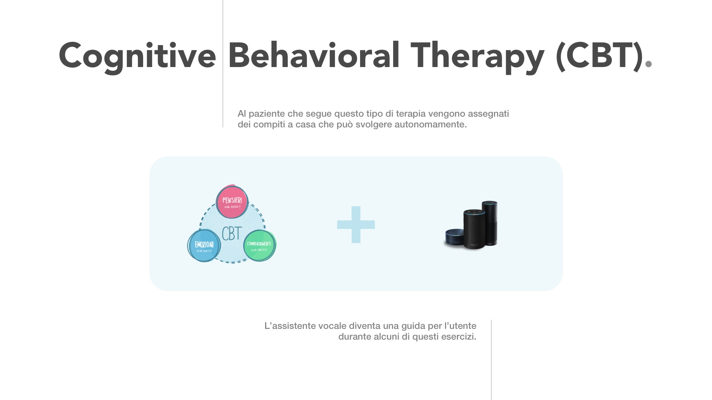
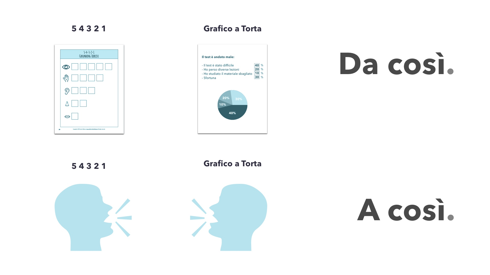
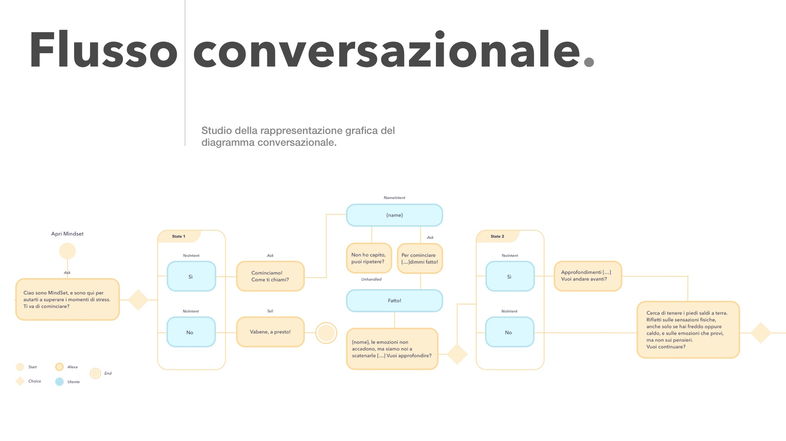
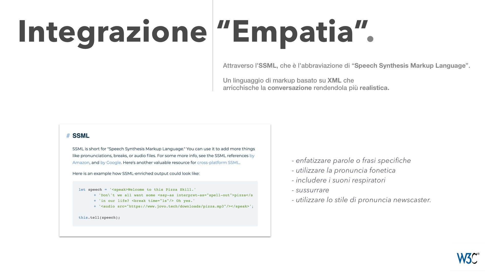
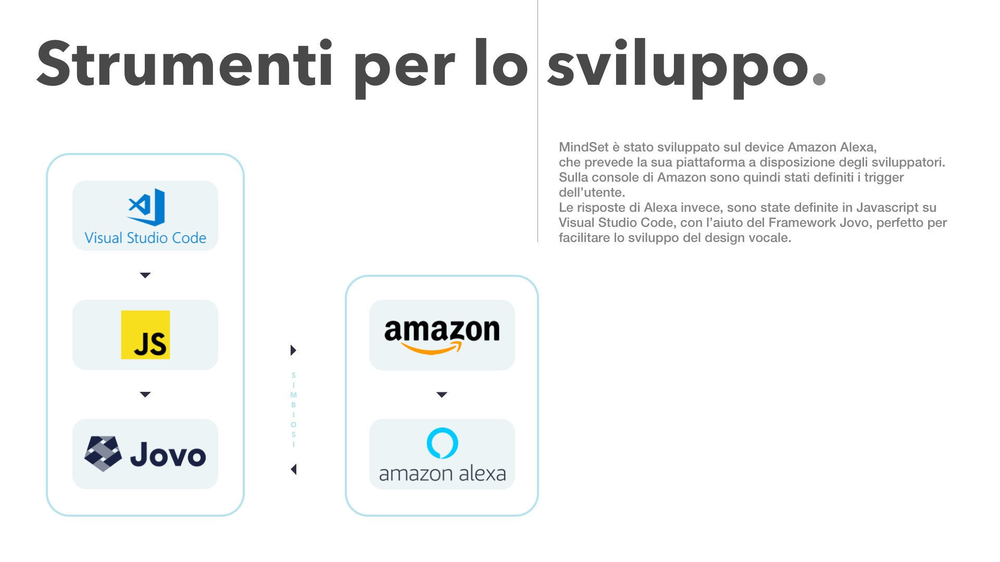

Qui si parla di
design invisibile.
Il design del servizio in effetti comprende
l’estetica solo in parte, anzi direi che è solo
la ciliegina sulla torta, la progettazione di un prodotto è composta prima di ogni altra
cosa: dallo
studio dell’usabilità. E questo ne è un chiaro esempio.
Progettare un servizio senza interfaccia.
Questo è (ovviamente)
il progetto che mi sta più a cuore di tutti.
Durante la mia discussione di tesi ci tenevo a presentare un prototipo funzionante che fosse
un esempio su come usare l’intelligenza artificiale come strumento per la psicoterapia.
A seguito di una lunga ricerca e svariate interviste alle pazientissime Psicologhe: Flavia Posabella; Anna Muredda e Maddalena Digiglio, ho individuato il percorso terapeutico che più si sarebbe adattato a MindSet, ed è certamente la “Terapia Cognitivo Comportamentale”.
A differenza di altri tipi di terapie in cui il paziente è spesso la parte passiva da analizzare; la Terapia Cognitivo Comportamentale prevede una collaborazione attiva tra paziente e specialista. Al paziente infatti vengono spesso assegnati dei “compiti a casa” che svolge autonomamente.
È fondamentale specificare che è solo in questo caso che MindSet può intervenire, non può di certo sostituire lo specialista, bensì può diventare uno strumento per lo stesso.
Due esempi di esercizi della terapia cognitivo comportamentale molto noti:
- Il primo esercizio "5 4 3 2 1", consiste dell’elencare rispettivamente: 5 oggetti che si possono vedere, 4 che si possono toccare, 3 suoni si possono ascoltare, 2 aromi che si possono odorare e 1 che si può gustare. L’obiettivo è quello di distogliere l’attenzione dal pensiero ossessivo per riportarlo al presente.
- Il secondo esercizio "Grafico a Torta”, consiste nel fare un’analisi della preoccupazione rappresentandola graficamente. Questo è un esercizio utile per i pazienti che tendono ad ingigantire ed esasperare la preoccupazione, aiuta infatti a concretizzare la paura e ridimensionarla.
In questo progetto, come anticipavo, il design è invisibile, la sfida è stata progettare il Voice Design dell’ intelligenza artificiale di Alexa senza avere tra le mani delle regole da seguire.
il Voice Design in effetti è un tipo di progettazione talmente recente che non esistono regole univoche, quindi la sfida, è stata anche sperimentare la rappresentazione grafica del flusso conversazione.
L’obiettivo dell’intelligenza artificiale è quello di rendere la conversazione quanto più realistica possibile , uno dei progressi degli ultimi tempi è l’integrazione del linguaggio di markup “SSML”, grazie al quale è possibile gestire l’intonazione della pronuncia e altre cose divertenti per rendere la conversazione credibile.
In sintesi, cos’è MindSet? è un assistente vocale in grado di accompagnare lo specialista durante la terapia con il paziente. MindSet non può e non vuole sostituire l’esperto, l’obiettivo è semplificare l’esperienza per entrambi.
